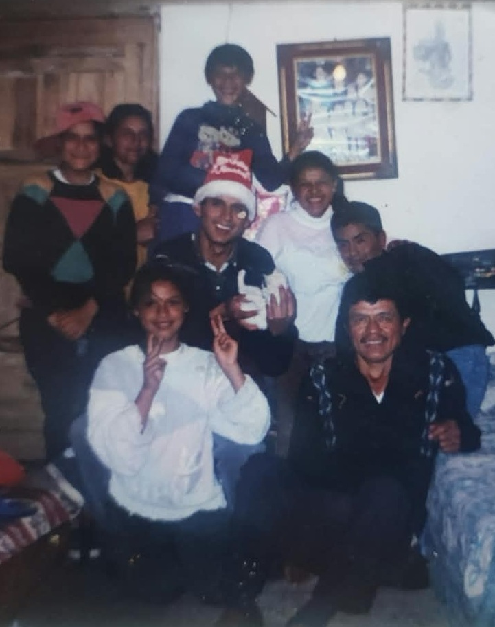

En Amorosa Memoria

Con amor y gratitud recordamos su vida
MARTHA
“Tu recuerdo vivirá por siempre en nuestros corazones.”
Instantes Eternos
Su sonrisa y su legado
Celebración Eucarística
Santa Misa en memoria de Martha
-
Fecha [FECHA]
-
Hora [HORA]
-
Iglesia [NOMBRE DE LA IGLESIA] [DIRECCIÓN]